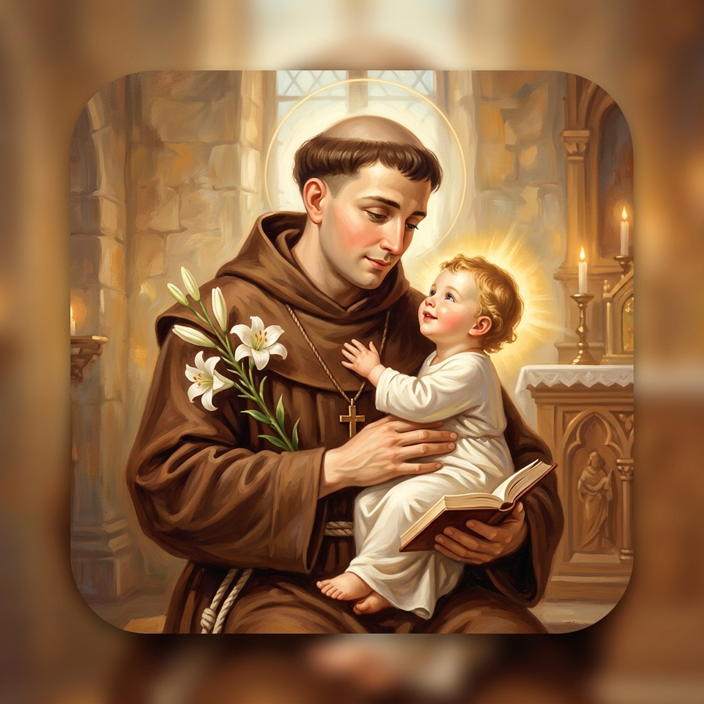

புனித அந்தோணியார் ஆலயம்
வடக்கு பாகனூர்
அமைதியும் அன்பும் தவழும் புனித பூமியில், எங்கள் பங்கு சமூகத்துடன் இணைந்து இறைவனின் அருளையும் நன்மைகளையும் பெற்று மகிழுங்கள்.

பதுவை நகர் புனித அந்தோணியார்
நமது ஆலயத்தின் பாதுகாவலரான புனித அந்தோணியார், இறைவனின் பேரன்பையும் வல்லமையையும் மக்கள் மத்தியில் பகிர்ந்து வரும் அற்புதங்கள் நிறைந்த அருளாளர் ஆவார். ஏழைகள் மற்றும் தொலைந்த பொருட்களின் பாதுகாவலரான இவரின் பரிந்துரையால் எண்ணற்ற மக்கள் ஆறுதலும் ஆசீரும் பெற்று வருகிறார்கள்.
ஆலய அருட்பணிகள்
பங்கு மக்களின் ஆன்மீக வளர்ச்சிக்காகவும் இறையருளைப் பெற்றுக்கொள்ளவும் வழங்கப்படும் அருட்சாதனங்கள்.
திருப்பலி கருத்துக்கள்
நமது குடும்பத்தின் நன்றியறிதல், நினைவு நாட்கள் மற்றும் விசேஷத் தேவைகளுக்காக திருப்பலி கருத்துக்களைப் பதிவு செய்திட பங்குத் தந்தையை அணுகவும்.
ஒப்புரவு அருட்சாதனம்
ஒவ்வொரு சனிக்கிழமை மாலை மற்றும் திருப்பலிக்கு முந்தைய நேரங்களில் ஒப்புரவு அருட்சாதனம் (பாவசங்கீர்த்தனம்) ஆலயத்தில் வழங்கப்படும்.
தனிப்பட்ட செபங்கள்
உங்களது செபத் தேவைகளை இணையதளம் வழியாகவோ அல்லது ஆலயத்தின் செபப் பெட்டியிலோ சமர்ப்பித்து கூட்டுப் பிரார்த்தனைகளில் இணையுங்கள்.
பங்குப் பேரவை மற்றும் இயக்கங்கள்
ஆலயத்தின் ஆன்மீகப் பணிகள் மற்றும் சமுதாய நற்பணிகளில் செயலாற்றி வரும் முக்கியப் பிரிவுகள்.
மறைக்கல்வி மன்றம்
ஒவ்வொரு ஞாயிற்றுக்கிழமையும் திருப்பலிக்கு முன்னதாக பங்கு சிறுவர்களுக்கு விவிலிய போதனைகளும் கிறிஸ்தவ நம்பிக்கைப் பயிற்சிகளும் வழங்கப்படுகிறது.
இளைஞர் இயக்கம்
பங்கின் ஆற்றல்மிக்க இளைஞர்களை ஒருங்கிணைத்து ஆலயப் பெருவிழாக்கள், இரத்ததான முகாம்கள் மற்றும் சமூக சேவைப்பணிகளில் ஈடுபடுத்துகிறது.
வழிபாட்டுக் குழு
வழிபாடுகளில் ஒழுங்கு, வாசகர் பயிற்சி, திருப்பலி பீடப் பணி மற்றும் ஆராதனை செபங்களை தயாரித்து வழிநடத்தும் ஆன்மீகப் பிரிவு.